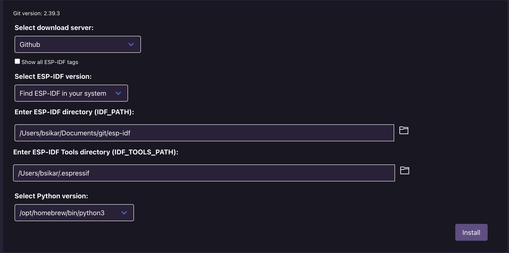

Introduction
We’re building a robot that can travel across all sorts of terrain, from smooth plains to hilly landscapes, while creating detailed 3D maps of the area. Our robot isn’t just about mapping the ground—it’s also equipped to measure temperature, humidity, and air quality, giving a full picture of the environment.
At the heart of our robot is the ESP32 microcontroller, which handles all the data processing and control tasks. We’re using MG946R servo motors to ensure our robot can move smoothly and adapt to different terrains.
This project is all about combining cool tech and practical applications. By the end, we aim to have a robot that’s not only a great mapper but also a valuable tool for anyone interested in environmental monitoring.
Documentation
All of the docs can be found here including the installation and dependencies.
mdBook
mdBook was used to generate these docs.
Contributing
Anything inside of the Topographic-Robot is free and open source. You can find the source code in various repos on the organization. Any issue or feature request can be posted on the GitHub issue tracker for their corresponding repository. Internally Jira is used to manage features, issues, sprints, the backlog and many other things. This means not everything on Jira will be attached to GitHub. However, all of the code documentation, and the progression of development will be shown.
License
Everything within the organization is released under the MIT License. If there is a repository that includes a different license such as a library thats not internally made by us then that license takes precedence. If there is ever a repository that is made by us and doesn’t explicitly include a license then know it is still released under the MIT License.
Microcontroller Decision for Topographical Mapping Robot
Introduction
When designing a robot for topographical mapping, selecting the appropriate microcontroller is crucial. This document outlines the decision-making process for choosing between the MSP432 and the ESP32, detailing the benefits and drawbacks of each, and explaining the final choice to use the ESP32.
Considered Microcontrollers
ESP32
The ESP32 is a powerful and versatile microcontroller known for its integrated Wi-Fi and Bluetooth capabilities. It features a dual-core processor, ample GPIO pins, and extensive support for various networking protocols.
Advantages
- Integrated Features: Built-in Wi-Fi and Bluetooth simplify development and reduce the need for additional modules.
- Community Support: Extensive libraries, documentation, and community resources facilitate the development process.
- Cost-Effective: At approximately $9, the ESP32 is an affordable option.
- Flexibility: Provides the option to use high-level libraries or program directly in C/C++ for more control.
- Performance: Dual-core processor with a clock speed of up to 240 MHz offers robust performance for complex tasks.
Disadvantages
- Power Consumption: Higher power consumption compared to some low-power microcontrollers.
- Complexity: May be overkill for simpler applications due to its extensive features.
MSP432 (Replaced by ESP32)
The MSP432, previously considered, is a microcontroller from Texas Instruments designed for low-power applications with a strong focus on energy efficiency and performance.
Advantages
- Low Power Consumption: Designed to operate efficiently with minimal power.
- High Precision: Offers high precision in analog measurements with its integrated ADC.
- Ease of Use: Simplified development environment with support from Texas Instruments.
Disadvantages
- Limited Connectivity: Lacks built-in Wi-Fi and Bluetooth, requiring additional modules for connectivity.
- Cost: Slightly more expensive compared to the ESP32.
- Community Support: Less extensive community support and fewer libraries compared to the ESP32.
Decision Rationale
The final decision to use the ESP32 was based on several key factors:
- Integrated Connectivity: The ESP32’s built-in Wi-Fi and Bluetooth are essential for the topographical mapping robot, allowing for seamless data transmission and remote control capabilities without needing additional hardware.
- Community and Development Resources: The extensive libraries and community support available for the ESP32 will significantly speed up development and troubleshooting processes, ensuring a more efficient project timeline.
- Cost Efficiency: The ESP32’s affordability makes it a cost-effective solution, allowing for budget allocation towards other critical components of the robot.
- Performance Requirements: The dual-core processor and high clock speed of the ESP32 provide the necessary computational power to handle complex mapping algorithms and data processing tasks.
- Flexibility and Scalability: The ESP32 offers flexibility in programming and the ability to scale the project with additional features without significant changes to the hardware platform.
Conclusion
After a thorough evaluation of the MSP432 and ESP32, the ESP32 has been chosen as the microcontroller for the topographical mapping robot. Its integrated features, strong community support, cost efficiency, and robust performance make it the ideal choice to meet the project’s requirements.
Installation
There are many things that need to be installed in order to start developing. There might be a release on GitHub, but likely not. To run this yourself you must go through the install process.
The section below can most likely be skipped unless you plan on making changes to the documentation.
mdBook setup
Linux
If you are going to do development for the documentation of this project, this is for you. Otherwise, continue to the next pages.
Installation of Rust
First Rust needs to be installed on your system:
curl --proto '=https' --tlsv1.2 -sSf https://sh.rustup.rs | sh
Installation of gcc
You will need to install gcc for mdBook. The provided command below is for apt systems and will need to be ran with sudo.
apt-get update
apt-get install gcc
Installation of mdBook
Once you have installed Rust, the following command can be used to build and install mdBook, this does not need to be ran as root.
cargo install mdbook
mdBook documentation
All of the official documentation for mdBook can be found on the official mdBook docs. However some good commands are:
mdbook build— Renders the book.mdbook watch— Rebuilds the book any time a source file changes.mdbook serve— Runs a web server to view the book, and rebuilds on changes.mdbook test— Tests Rust code samples.mdbook clean— Deletes the rendered output.mdbook completions— Support for shell auto-completion.
Windows
To install Rust for windows follow the following link provided https://www.rust-lang.org/tools/install Download the 64 bit .exe and run the file. Your command prompt should open once the file is ran.
-
“Rust requires a linker and Windows API libraries but they don’t seem to be available.” The following prompt should appear; select the 1st option by typing the number 1. This should be the free version. Selecting this will prompt Windows to install Visual Studio.
-
When prompted, click continue and install both packages displayed.
-
Once completed, the command prompt should update. Reboot your computer to continue.
-
Once your computer has rebooted, reopen your command prompt by reopening the rustup-init file previously downloaded. Three options should appear:
- Proceed with standard installation (default - just press enter)
- Customize installation
- Cancel installation
Select the 1st option.
-
Once install close the command prompt and reopen.This would reload its PATH environment variable to include Cargo’s bin directory (
%USERPROFILE%\.cargo\bin). -
Next reopen the command prompt and rust should be properly installed.
Environment Setup
Linux Environment (tested on debian-12.6.0)
MacOS Environment (tested on MacBook Air M1 2020 with Sonoma v14.5)
- Install esp-idf, follow and run: esp-idf MacOS setup
brew install cmake ninja dfu-utilgit clone --recursive https://github.com/espressif/esp-idf.gitcd esp-idf./install.sh esp32echo "alias get_idf=\". $(pwd)/export.sh\"" >> ~/.zshrcsource ~/.zshrc- Run this every time in a project to get
idf.py:get_idf
- Install more packages
brew install gcc make pkg-config arm-none-eabi-gcc openocd bear screen qemu- NOTE:
gdbcant be installed solldbmust be used instead
- NOTE:
Keep in mind
GNU “make” has been installed as “gmake”. If you need to use it as “make”, you can add a “gnubin” directory to your PATH from your zshrc like:
export PATH="/opt/homebrew/opt/make/libexec/gnubin:$PATH"
- Install clang-format v17+
brew updatebrew install llvm
If you need to have llvm first in your PATH, run:
export PATH="/opt/homebrew/opt/llvm/bin:$PATH"For compilers to find llvm you may need to set:
export LDFLAGS="-L/opt/homebrew/opt/llvm/lib">export CPPFLAGS="-I/opt/homebrew/opt/llvm/include"To avoid clobbering:
export LDFLAGS="$LDFLAGS -L/opt/homebrew/opt/llvm/lib">export CPPFLAGS="$CPPFLAGS -I/opt/homebrew/opt/llvm/include"
When I did this, I got
source ~/.zshrc
clang-format --version
Homebrew clang-format version 18.1.8
-
Install asmfmt
brew updatebrew install gogo install github.com/klauspost/asmfmt/cmd/asmfmt@latestecho 'export PATH="$PATH:$HOME/go/bin"' >> ~/.zshrcsource ~/.zshrc
-
(Optional) Install VS Code Plugin
- VS Code Plugin

Windows Environment (tested on Windows 11 23H2)
The first thing we need to do is setup your environment.
- Install esp-idf
- Follow and run: esp-idf Windows setup
- (Optional) Install VS Code Plugin
- Install clang-format
- Download, Run, and Install LLVM
- Verify download worked
clang-format --version
clang-format version 18.1.8
- Install asmfmt
- Install golang
- Download, Run, and Install GO
go install github.com/klauspost/asmfmt/cmd/asmfmt@latest
- Install golang